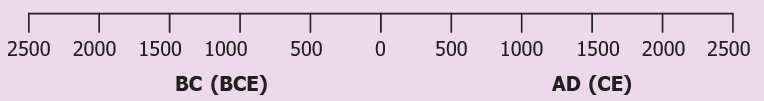
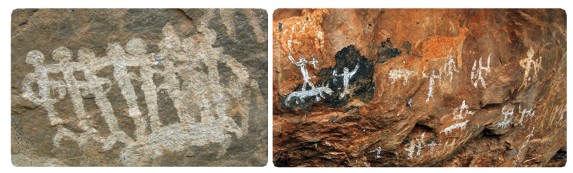
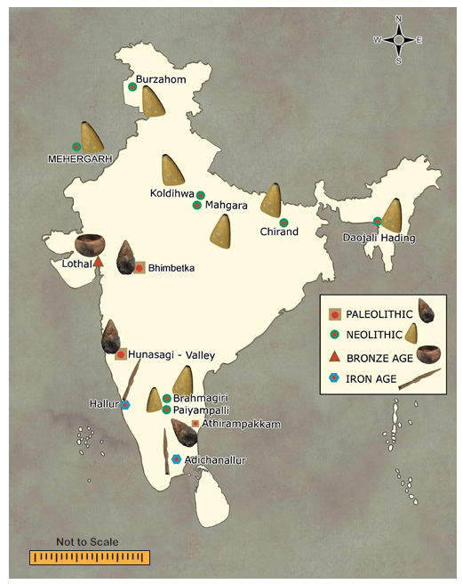
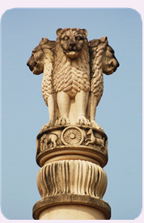
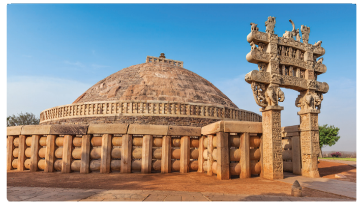
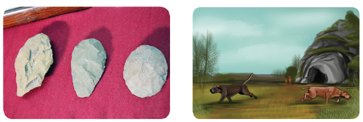

![The picture shows various sources of History such as Inscriptions, coins, monuments, Artefacts, literatures. in architecture palaces example thirumalai nayakar mahal, fort example vellore, temples example tanjore, monastery example tabhang are given. in inscription we have rock edicts, temple wall inscriptions, copper plates. artefacts are toys, tools, ornaments. in monuments we have palaces, fort, temples, stups, monetary. Literatures were classified as secular literature such as epic poem and Religious literatures such as ramayana, mahabharatha. in literary source we have epics and poems, account of foreign travellers, work of Indian authors and folk songs and ballads are given. in devotional literature devaram, nalayira divya prabhandam and tiruvasagam are given.](images/image-208.png) 0
0To know what history is all about.
To understand the importance of history
To learn about the lifestyle of the pre-historic man
To know how paintings portray the daily activities of the pre-historic man
To understand the importance of history and historical researches
Tamilini enters her house from school. Her mother, who was reading a book, greets Tamilini with a hug. She collects her school bag and asks Tamilini to refresh herself. She gives Tamilini some snacks to eat. She then asks Tamilini about the school activities of that day
Mother: Tamilini, what subject did you study today?
Tamilini: History, ma.
Mother: Oh nice! Did you properly understand what history is?
Tamilini: Yeah! I understood something about history. Can you please tell me more about history?
Info Bits.
Telling the Time in History
Time in history is calculated in years using BC (BCE) Before Christ (Before Common Era) and AD(CE) Anno Domini (Common Era).

Do you know.
History is the study of past events in chronological order.
Mother : What is your name?
Tamilini: Tamilini
Mother : Tell me your mother’s name.
Tamilini: Mrs. Sumathi…
Mother : Father’s name?
Tamilini: Mr. Adhiyaman
Mother : Tell me the name of your father’s father?
Tamilini: You mean grandpa? Mr. Chidambaram
Mother: Do you know the name of great grandpa. Mr. Chidambaram’s father?
Tamilini: Grandma always used to tell me about one ‘great grandpa’. You want that great grandpa’s name, amma? mmm…
Info Bits
The term history has been derived from the Greek word “Istoria” which means ‘learning by enquiry’.
Mother: Yes, your great grandpa’s name is Mr. Ramasamy. OK. Often your father shows proudly a very old wooden pen and used to tell us that it was his grandpa’s pen. Do you remember it?
Tamilini: Yes, amma! Normally he keeps it in a beautiful wooden case on his table. Is that the one?
Mother: You are right, Tamilini. We cannot write with that pen now. But father has kept it as a treasure. If you ask your father about that, he will show you the diary written by your great grandpa with that old pen. From that diary, we come to know that your great grandpa was a literate, while most of his villagers were illiterates. Further, we can understand the lifestyle of that period and also about activities from his diary writings
Tamilini: Can this small diary record so much of news, amma?
Mother: Yes, Tamilini. We understand the period and lifestyles of people of Old Stone Age from used stone tools, like what you understand about your grandpa and his time from his diary writing

In ancient period, the people lived in caves, used to draw paintings in rocks called Rock Painting. They might have wished to record their activities through these paintings.
Some major Indian excavated sites

Tamilini: What are the other sources that help us understand the lifestyles of Stone Age people?
Mother: We came to know their hunting style through their paintings on the rocks and the walls of the caves.
Tamilini: Rock paintings? It sounds really surprising. Why did they draw these paintings?
Info Bits
Numismatics The study of Coins.
Epigraphy The study of inscription.
Mother: Some would have stayed back, without joining the hunting team. So for their benefit, these pictures could have been drawn. They might have done it as a part of their pastime.
Tamilini: Certainly amma. That’s how we identify their lifestyles. Isn’t it, amma?
Mother: Well said, Tamilini. The period between the use of first stone tools and the invention of writing systems is pre- history. Stone tools, excavated materials and rock paintings are the major sources of pre-history.
0
Case study A Mighty Emperor Ashoka
The most famous ruler of ancient India was Emperor Ashoka. It was during his period that Buddhism spread to different parts of Asia. Ashoka gave up war after seeing many people grieving death after the Kalinga war. He embraced Buddhism and then devoted his life to spread the message of peace and dharma. His service for the cause of public good was exemplary. He was the first ruler to give up war after victory. He was the first to build hospitals for animals. He was the first to lay roads. Ashoka Chakra with 24 spokes in our national flag was taken from the Sarnath Pillar of Ashoka. Even though Emperor Ashoka was great, his greatness had been unknown until 19th century. The material evidence provided by William Jones, James Prinsep and Alexander Cunningham revealed the greatness of Emperor Ashoka. Based on these accounts, Charles Allen wrote a book titled The Search for the India’s Lost Emperor, which provided a comprehensive account of Ashoka. Many researches made thereafter brought Ashoka’s glorious rule to light. These inscriptions were observed on the rocks, Sanchi Stupa and Sarnath Pillar and helped to understand the greatness of Ashoka to the world.



Now one can understand the importance of historical research.
But for the efforts of scholars, the greatness of Emperor Ashoka would not have come to light.
Mother: Do you know what proto history is?
Tamilini: That is the period between pre-history and history.
Mother: Exactly. The period for which records in writing are available but not yet deciphered is called proto history. Today, we are leading a safe life with all modern equipment. But our ancestors did not live in such a safe environment. There might have been chances of wild animals entering their caves. But they realized that dogs could help them to prevent the entry of such dangerous animals by its sniffing skill. Hence, they started domesticating dogs for their protection and hunting activities.
From this, we also know how inscriptions, monuments, copper plates, accounts of foreigners or foreign travelers and folk tales play a vital role in constructing and reconstructing history.
Tamilini: Now, I completely understand what history is, amma.
Thank you, amma.
The life styles of pre historic people can be understood from the stone tools, rock paintings, fossils and other excavated materials.
Proto history is the period between pre-history and history.
Early humans domesticated dogs for their protection and hunting activities.
Mighty Emperor Ashoka followed the path of peace and dharma.
Ashoka Chakra with 24 spokes in our national flag was taken from Sarnath Pillar of Ashoka.
1 |
Sources |
- |
a place, person, text or object from which some data can be obtained |
2 |
Ancestor |
- |
a person related to you who lived a long time ago |
3 |
Dharma |
- |
righteousness |
4 |
Monument |
- |
a statue, building or other structure built by a notable person |
5 |
Inscription |
- |
written records engraved on stones, pillars, clay or copper tablets, caves and walls of temples. |
6 |
Historian |
- |
A person who excelled in history |